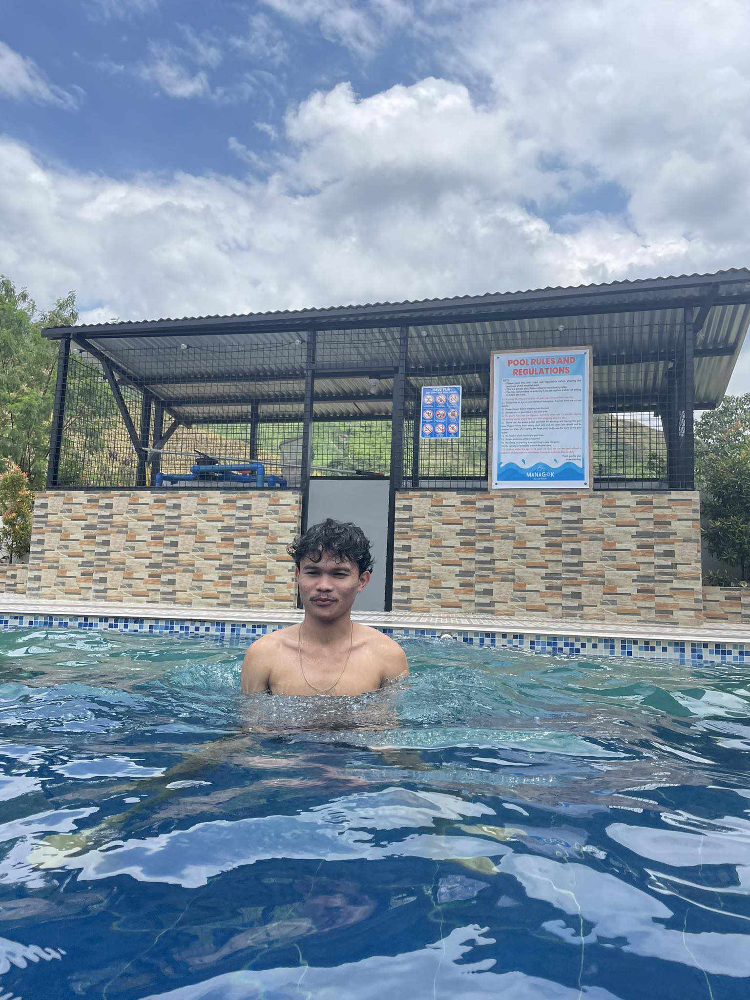

Hey there! I'm Milcky Jhones Francisco, a 20-year-old IT student with a knack for diving into the digital world. When I'm not engrossed in lines of code or exploring the depths of tech, you can often find me in a few different worlds altogether.
First things first, table tennis is my jam! There's something about the rhythm and precision that gets me hooked every time I pick up a racket. It's not just a sport to me; it's a fantastic mix of strategy and swift reflexes.
Now, let's talk about my downtime. I'm an avid anime enthusiast and a dedicated reader of manga and manhwa. From the epic adventures to the intricate storytelling, there's a universe of captivating tales out there that never fail
to transport me to a new realms of imagination. It's like stepping into a portal to a different dimension with each new series or chapter.
But of course, balancing my IT studies with these hobbies keeps life interesting. I'm fascinated by the constant evolution of technology and its impact on our lives. Coding, troubleshooting, and building digital solutions are all
part of my daily quest to understand and contribute to this dynamic field.
So, whether I'm perfecting my backhand on the table tennis court, immersed in the latest anime episode, or delving into lines of code, I'm always seeking the perfect blend of challenge, creativity, and excitement in everything I do.
Feel free to join me on this journey—it's always more fun with fellow adventurers!
